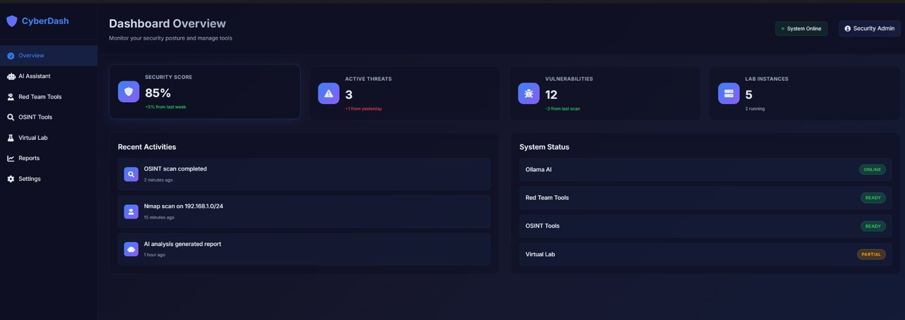

SECURITY · PYTHON · DOCKER · LOKALE AI
CyberDash
Een modulair security-dashboard dat lokale AI, netwerk- en security-tools, OSINT-utility's en containerbeheer achter één webinterface samenbrengt — gebouwd als oefening in architectuur en integratie.
RESULTAAT
Meerdere security-, OSINT- en labtools achter één interface, met een lokale AI-assistent.

01 HET PROBLEEM
Security-werk verspreidt zich over tientallen losse command-line-tools met elk hun eigen output. Ik wilde één plek die scanners, OSINT en een geïsoleerd oefenlab samenbrengt — en meteen een oefening in architectuur en integratie.
02 WAT HET DOET
- Eén webinterface
- Scanners, OSINT-tools en labbeheer achter één modulair dashboard in plaats van losse terminals.
- Lokale AI-assistent
- Een lokaal taalmodel als assistent in de interface, zodat er geen data naar de cloud gaat.
- Tool-wrappers
- Nette wrappers rond bekende security-tools, met de resultaten netjes in de interface.
- OSINT-module
- Open-source-intelligence-hulpmiddelen gebundeld op één plek.
- Geïsoleerd oefenlab
- Een containergebaseerd lab om veilig en afgeschermd te experimenteren.
03 WAT IK ERVAN LEERDE
De uitdaging zat niet in de losse tools maar in de architectuur eromheen: modules netjes koppelen, output uniform tonen en alles veilig en geïsoleerd houden. Publiek toon ik dit als integratie- en ontwerpwerk, niet als live security-tooling.
INTERESSE?
Laten we praten.
Vertel me wat je ervan vindt — of wat je ermee zou willen doen.